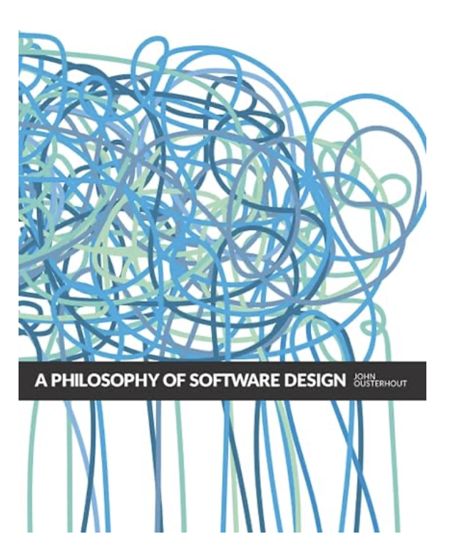

Trusts its own output, reviews its own code kindly, won't challenge its plan.
Goal drift
Over a long run it wanders from the original intent — solves a nearby problem.
The best spec is executable — TDD. Write the failing test first: a red
test is a goal the agent can't fake passing, so it anchors against laziness and drift at once. Everything
else in this talk is process built around that idea.
My pipeline
/grill-me → /write-prd → /to-issues →
claude -p (subagent per slice) → review (fresh session) → merge (base branch)
Front-loaded thinking
The first three steps produce a durable artifact: a spec and a set of independently-shippable issues.
Cheap execution
Once slices exist, execution is parallel and hands-off. The expensive part is deciding what
to build, not typing it.
Open question: should /write-prd be unified across the company —
one shared PRD format so all agents speak the same language?
Waterfall model vs. agile model
Waterfall means pipeline: definition, design, coding, testing and maintenance.
Agile means: smaller issues, smaller reviews, iterations, incremental etc.
The problem with agile was that it is super hard to understand all implications upfront.
By splitting into smaller tasks, you get to influence more changes as you build it (how, whant and what do you change => that's hard).

/grill-me — interrogate the design
Before any code, make the model relentlessly interview me about the plan —
resolving every branch of the decision tree.
Surfaces edge cases I hadn't thought of (which failure crashes, which don't)
Forces decisions to be explicit instead of implicit
Directly fights goal drift — intent is pinned down before we start
With a good context, I am somewhere around 10 questions.
Not perfect: it still asks some completely obvious questions, and sometimes
too many. Bring as much context as possible and think the design through up front;
the more I give it, the sharper the questions.
/write-prd & /to-issues
/write-prd — a technical PRD
Problem, solution, user stories, scope. Mostly you skim it — some argue you shouldn't read PRDs at
all, since LLMs summarize them well.
Not sure if this should be on GH because how do you update it over time? Memory rule: probably expensive in terms of time (what's the granularity of
change needed for the agent to go update the spec? + you're polluting the context)
/to-issues — your human touch
This is where I actually spend attention: how would I implement it? Can slices be
parallelized? Should two issues merge, or one split further?
One slice = one agent, one branch, one PR, one review — small blast radius, parallelizable,
each carries its own tests.
Launching a subagent per slice
One headless agent, scoped strictly to one issue, opens its own PR:
claude -p "Implement the vertical slice described in
specs/read_only/issues/03-honor-across-failover.
Read that issue file in full plus its parent PRD at
specs/read_only/global-read-only-ha.md, then implement the slice.
Scope yourself strictly to this issue.
Make a separate GH branch and open PR with the current branch as the base." \
--dangerously-skip-permissions \
--output-format stream-json --verbose
Fresh context on purpose: Close the main planning session (noting its
session ID so I can resume it later) and launch each slice as a new claude -p run — a clean
context holding only the issue + PRD.
Vertical slice is a term connected to deep modules => classes that do
a lot with a small interface, not "classitis" like in Java.
AFK vs. HITL
HITL — human in the loop
Approve every command, every edit
Chained to the keyboard
Hours of typing yes / no
Throughput = your reaction time
AFK — away from keyboard
Agent runs to completion unattended
Frees you for deep, focused work elsewhere
Come back to a finished PR
Throughput = number of agents
The real win is deep work. While the agent runs I concentrate fully on
something else — no context-switching back to approve every step, no keeping the task warm in my head. Attention mgmt
Enabling AFK: --dangerously-skip-permissions
Permissions are annoying and even a full allowlist can't guarantee silence: the
cd … && … > file pattern trips a built-in guard the allowlist can't satisfy.
Enables AFK
Launch with the flag; agent can't self-grant it mid-session
Reading untrusted content = prompt injection with a live shell
The right fix is a real sandbox. Run the agent inside a
Docker container so an un-gated shell can't touch anything that matters. I first tried sandcastle,
but it leans on the Anthropic API, is more geared to TypeScript, and pulls issues straight from GitHub — not
a clean fit for this C++ flow. So I rolled my own: claude-sandbox (next slide).
My sandbox: claude-sandbox
A throwaway Docker container that runs the agent with bypass mode safely — blast
radius is the container, not my machine.
What it does
Clone REPO at INPUT_BRANCH, cut OUTPUT_BRANCH
Run claude -p --dangerously-skip-permissions with my prompt
Commit + push, then open a PR back to the input branch
Live stream-json feed piped through jq — I watch every tool call
Why it fits
Subscription, not API — uses CLAUDE_CODE_OAUTH_TOKEN,
unsets ANTHROPIC_API_KEY
Runs as a non-root mg user inside the container
Disposable: --rm, nothing persists on the host
./run.sh "Fix the flaky test in tests/unit/foo and add a regression test" \
feature/storage-allow-recovery-failure claude/fix-flaky-foo memgraph/memgraph
Positional args: "<prompt>" <input-branch> <output-branch> [owner/repo]
(repo defaults to memgraph/memgraph). Lives under ../claude-sandbox.
The catch: you can't just spawn 50 agents
Each coding agent eventually wants to build Memgraph. The build is the bottleneck:
RAM
Parallel C++ compiles blow up memory — the machine swaps or OOMs.
CPU
N agents × ninja -j oversubscribe every core; everything crawls.
Contention
Builds fight each other; wall-clock gets worse, not better.
What I actually do: keep it simple — plain claude -p, low concurrency. I
don't use dynamic workflows / ultracode: they burn far too many tokens for the benefit here.
Corollary guardrail: never trigger a full memgraph build for a test-only slice —
it compiles nothing new and wastes minutes + RAM.
Tests make intent machine-checkable — the agent can't declare victory while they're red.
They work best when I'm specific: "do this, this, and this — and look at
this folder/file for how we write such a test."
Point it at an existing test as the pattern to follow
Spell out the cases to cover — don't leave "what to test" to the model
The nuance that bites: it will happily write a test for the old
behavior, not realizing an equivalent test probably already exists. So you really do have to read the tests
it wrote — and watch the logs to see how the system actually behaves — not just trust a green checkmark.
Guardrails I keep in memory
Pull before branching — branch off fresh origin/<base>
Zero-prompt subagents — bypass mode; no cd && … > file
New gflag ⇒ config test — register in default_config.py
Minimal comments — no PR/ticket refs, no line numbers
No API pollution for tests
Check pinned dep versions — read conanfile.py first
Where they live: the agent's persistent memory —
~/.claude/projects/<project>/memory/: an index MEMORY.md plus one
feedback_*.md file per rule (e.g. feedback_pull_before_branching.md). Project-wide
conventions also sit in CLAUDE.md at the repo root. Each rule started as a mistake made once,
then written down so every session & subagent inherits it.
The good side: observe & test what it built
My time shifts to observing the system instead of
writing code:
More hours actually exercising the feature & reasoning about correctness
Customer calls mean a lot because I can see how they really use the product
Reviews too: I build it, test it, play with it, and
try to break it
Corrupt one tenant's durability → instance boots with that tenant defunct instead of
crashing. I could reproduce corruption, watch it boot, and confirm healthy tenants kept working.
Hot & cold storage
Same story — build it, exercise it, observe the tiers behave. Verification is concrete, not vibes.
Reviewing: a fresh session
I never let the same context that wrote the code also bless it — that's self-preferential bias.
Start a new session with the Memgraph skills & review agents
(storage, HA, correctness, maintainability…)
Clean context = no attachment to the earlier plan
After every subagent finishes: review that slice, then merge it to the base
branch
subagent done → fresh review session → MG skills + agents →
merge to base
Merge conflicts: /resolve-conflicts
Parallel slices merging into one base branch means conflicts are routine. I hand them to the
/resolve-conflicts skill — a structured framework for merging imports, tests, lock files,
config, and deleted-but-modified files.
Real run — PR #4354: mostly
correct, but two issues slipped through.
The stupid one
Plain duplication — kept a block from both sides. Obvious on a read, trivial to fix,
but a green build wouldn't have caught it.
The serious one
A genuinely subtle resolution — I'd have made the same call on my first try. Not a
model failure so much as a genuinely hard merge that needs real understanding.
Takeaway: the skill does the mechanical 90% well, but conflict resolution is
exactly where semantic intent hides — you still have to read the result, not trust the merge. The hard cases
are hard for a human too.
The gap I haven't closed yet
Ideally this is fully automated: agent codes a slice → another agent reviews it →
auto-merge — no human in between.
Have
Autonomous coding per slice
Fresh-session review with MG agents
Manual review + merge after each slice
Want
Code → review → merge as one pipeline
Human only on the final gate / conflicts
Not there yet — still the manual step
A natural next step: spin up a review subagent per issue (complexity
permitting). Reviewing issue-by-issue is far easier than reviewing the whole base branch at once — that's
more code, more context, and harder to reason about.
The real downside: we know the codebase less
If the agent writes most of it, our mental model of the code erodes over time.
Veterans
Those of us here longer already carry the model - we can still read and
review.
Starting from scratch
My intuition: someone building a codebase this way from day one will find it much
harder to ever truly know it because the understanding was never built.